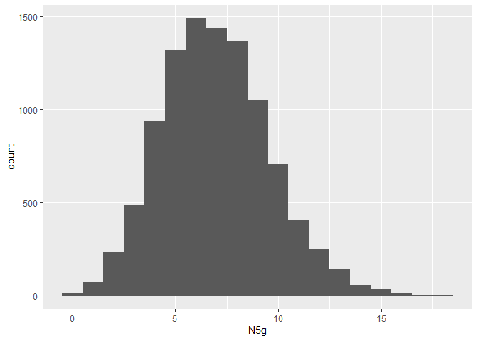

Using RNA to show that Covid-19 and 5G are connected
 Stéphanie van den Berg
Stéphanie van den Berg Karel Kroeze
Karel Kroeze Anna Machens
Anna MachensJune 30, 2021
RNA is the DNA of viruses. So what does it tell us if the RNA of Covid-19 can be show to be related to 5G?
First, the evidence. We download the genome for Covid-19 from the NCBI database, and convert it into a string.
# get RNA sequence
rna <- covid19.genomic.data(graphics.ON = FALSE) %>% unlist()
## Loading required package: ape
## Retrieving data from NCBI...
## 29903-none-character
# collapse into a single string
sequence <- rna %>% paste0(collapse = "")
sequence %>% str_sub( 0, 255 )
## [1] "attaaaggtttataccttcccaggtaacaaaccaaccaactttcgatctcttgtagatctgttctctaaacgaactttaaaatctgtgtggctgtcactcggctgcatgcttagtgcactcacgcagtataattaataactaattactgtcgttgacaggacacgagtaactcgtctatcttctgcaggctgcttacggtttcgtccgtgttgcagccgatcatcagcacatctaggtttcgtccgggtgtgacc" ...
We now have the genome as a 29903 characters long string. Let’s have a closer look at what that RNA is made of.
# Which letters occur, and how often?
counts <- rna %>% table()
counts
## a c g t
## 8954 5492 5863 9594
# that makes the probability of a 'g' occurring at any point in the genome
Pg <- counts["g"] / sum(counts)
Pg
## g
## 0.1960673
# and the probability of 5 'g's occurring in a row
P5g <- Pg ^ 5
P5g
## g
## 0.0002897515
The odds of the text ggggg occurring anywhere in the genome are 1:3451. Surely, if 5g occurs in the RNA, then that cannot be a coincidence! Hang on though, this is just the probability of 5g occurring at any specific spot in the genome. There are 29299 positions where a string of 5 characters might begin, so the probability of 5g occurring at least once in the genome is actually given by the inverse of the probability of 5g not occurring almost 30.000 times in a row, or $1-(1-P_{5g})^{29299}$. That probability is 0.9998274. So how often does 5g occur in the genome?
# 5g shows up exactly once
occurances <- sequence %>% str_locate_all( "ggggg" )
occurances %>% length()
## [1] 1
# in context
str_sub(sequence, occurances[[1]][1,1] - 5, occurances[[1]][1,2] + 5 )
## [1] "ctagtgggggacaac"
It looks like we should be surprised 5g isn’t occurring more often. Surely, that is a sign of a global cover up! Let’s do some additional verification, and see how often we might expect 5g to occur if the RNA was random. A simple permutation test should do the trick.
k <- 10000 # number of samples
N5g <- numeric(k) # keep track of the number of 5g occurrences in each sample
l <- length(rna)
for (i in 1:k){
N5g[i] <- sample(rna, l) %>%
paste0(collapse = "" ) %>%
str_count("ggggg")
}
# simulated distribution of number of 5g occurrences if Covid RNA was random
tibble(N5g) %>%
ggplot(aes(x = N5g)) +
geom_histogram(binwidth = 1)

Based on this simulation, we might reasonably expect to see (i.e., with a 90% confidence interval) between 3 and 11 occurrences of 5g. The observed probability of seeing only one occurrence is 0.007, if Covid-19’s RNA was not manipulated, we’d expect to see that only 1 out of 143 times!
There you have it then, irrefutable proof that the link between 5g and Covid is being suppressed - uncovered by Data Science.
 Abhishta Abhishta
Abhishta Abhishta Karin Groothuis-Oudshoorn
Karin Groothuis-Oudshoorn Martin Schmettow
Martin Schmettow Robert Marinescu Muster
Robert Marinescu Muster